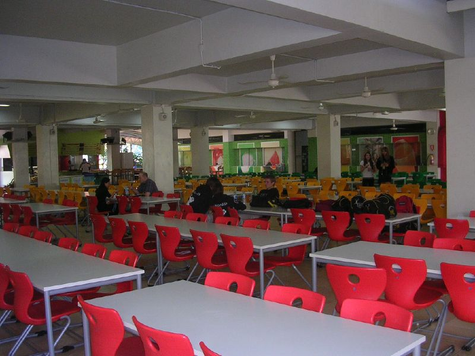

Ensino Fundamental
Ensino Fundamental
iniciada
Aprendizagem significativa através da análise, da compreensão e da aplicação do conhecimento no Mundo, tornando o aluno protagonista desse processo e, consequentemente, do seu projeto de vida
Alunos Conectados com a Tecnologia
diverção e Tecnologia
Com os Livros Eletrônicos que integram os conteúdos do material impresso com as melhores soluções multimídia, os alunos podem aprender dentro e fora do ambiente escolar. Munidos de completo conteúdo teórico, com o apoio de animações, gráficos ilustrativos, palavras explicadas e atividades lúdicas, estudar se mostra uma atividade prazerosa.
.jpg)
Auditório da escola
Foi fundado 1982
Escreva algo sobre esse lugar
conquistas da escola
.jpg)
Foi ganhado o primeiro premio no debate interese
Escreva sobre essa pesquisa

Ficamos em segundo lugar na competição de futebol>
Escreva sobre essa conquista

Ficamos em segundo lugar na competição de interescolar>
Escreva sobre essa conquista
o que a denovo
- nova cantina da escola  As opções alimentarese responsáveis. Menos online com fotos das refeições preparadas e descrições detalhadas de seus ingredientes ajudam os alunos. Cada aluno ou funcionário que acessa a cantina pode receber uma Conta da Cantina Escolar no site da escola. Encomendar online marcando uma caixa e pagar as refeições online pode eliminar toda a confusão de manuseio. Aqui, novamente, a diversidade é a chave.
-
sistema de gestão de atendimento online implementado
Implementamos um sistema de presença online filho na escola. Uma vez que o aluno, chega à escola, os pais são informados sobre o status, via sms. Isso auxilia a___________ a manter um registro das faltas dos alunos. Os mesmos podem marcar a presença ao fazer login, sendo armazenados em um banco de dados que pode, mais tarde, ser conferido pelo Admin. O monitoramento possui tanto potencial, que pode identificar quais alunos não estão aptos a suas aulas e não possuem conectividade com os conceitos trabalhados, naquele momento____ sua grade curricular. Assim que inserir o número de matricula ou o nome de um aluno, detalhes como, participação em______ número de presença em aulas serão exibidos, e nenhum proxy pode ser utilizado, pois o monitorador é desenvolvido com_______ cloud. A segurança pode ser tão robusta e forte que mesmo aqueles alunos que sempre enganam os reitores são pegos ra_____ logo após o admin inserir os detalhes de login nesse monitorador. Tudo isso melhorará a precisão e transparência em________ instituições educacionais, uma vez que alunos e pais são informados com antecedência sobre o status, em tempo real, pedidos de saída e faltas, de modo confidencial e a custos reduzidos.